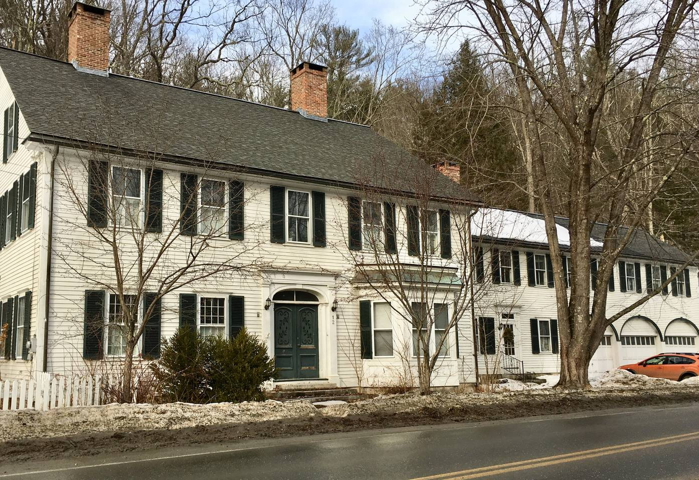

The Historic Williams House
Come appreciate the beauty of this gorgeous historic late 18 century house in Williamsville village. Located 15 minutes from Brattleboro, 5 min. from the historic village of Newfane. For skiers, driving to Mount Snow (15 miles) takes less than 30 minutes and 40 min. to Stratton (28 miles) on clear roads. For summer, we have built a 16x32ft. gunite pool on the hill behind the house, it's heated by passive solar panels which means we can open it earlier and close it later in the season.
This 7000 sq. ft. house, including a ballroom (which is still being worked on) is a historic landmark, with loads of space and character... upstairs has five large bedrooms, four of them with a private wash basin, two full baths; one with claw foot tub and the other with new corner shower. Ground floor has one large (queen) bedroom, one full bath (shower), one half bath/laundry room, kitchen, dining room with fireplace and large harvest table that easily seats 10, spacious living room with fireplace, TV room and yet another room with fireplace for board games or reading on the widow seat or even work if you have to. Firewood is provided. If you are unfamiliar with fireplaces we will be happy to give you a lesson - or build a fire for you. You don't have to bring or buy drinking water, we have tasty well water right out of the tap! The water is tested quarterly. In addition to the sound bar and woofer in the TV room, we have two portable Bluetooth speakers for you to enjoy your own music or podcasts. We also have board games and playing cards and books, including children's books.
Private back yard surrounded by hydrangeas, with quiet stream trickling behind the stone patio at the back of the house. New gunite pool on the hill behind the house, screened by 7ft. hydrangea hedge, patio and lawn and lavender and more hydrangea - and a firepit. The pool is 32x16 ft., 4 1/2 ft. deep with 3 steps running the length of the pool - great for socializing and doing laps too. The whole place is yours, well, except the attic, basement and garage.